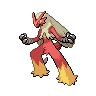

📖 英語版の図鑑説明
Blaziken has incredibly strong legs—it can easily clear a 30-story building in one leap. This Pokémon’s blazing punches leave its foes scorched and blackened.
日本語訳
バシャーモは驚異的な脚力を持っており、30階建てのビルを一跳びで飛び越えることができます。このポケモンの燃えるようなパンチは、敵を焦がし、黒焦げにします。
📝 この図鑑文に出てくる英単語
| 英単語 | 意味 | 品詞 | レベル |
|---|---|---|---|
| incredibly | 信じられないほど | 副詞 | 高校 |
| easily | 簡単に | 副詞 | 中2 |
| leap | 跳ぶ | 動詞 | 大学 |
| blazing | 燃えさかる | 形容詞 | 大学 |
| punches | パンチ(複数形) | 名詞 | 中3 |
| foes | 敵(複数形) | 名詞 | 大学 |
| scorched | 焦げた | 形容詞 | 大学 |
| blackened | 黒くなった | 形容詞 | 高校 |
💡 英語名「Blaziken」の由来
英語名「Blaziken」は、blaze（炎）とchicken（ニワトリ）を組み合わせた名前と考えられている。ドイツ語の名前は「Lohgock」で、Lohe（炎）、Gockel（オンドリ）から作られている。
出典 Bulbapedia
✨ バシャーモの豆知識
杉森建さんによると、バシャーモのモデルはキックボクサーのベニー・ユキーデや、プロレスラーの小林邦昭さんだという。
出典 Bulbapedia
📊 バシャーモの種族値
HP80
こうげき120
ぼうぎょ70
とくこう110
とくぼう70
すばやさ80
合計 530
❓ よくある質問
- バシャーモの英語名は？
- バシャーモの英語名は「Blaziken」です。
- バシャーモの英語名「Blaziken」の由来は？
- 英語名「Blaziken」は、blaze（炎）とchicken（ニワトリ）を組み合わせた名前と考えられている。ドイツ語の名前は「Lohgock」で、Lohe（炎）、Gockel（オンドリ）から作られている。
- バシャーモは英語版の図鑑でどう説明されている？
- 「Blaziken has incredibly strong legs—it can easily clear a 30-story building in one leap. This Pokémon’s blazing punches leave its foes scorched and blackened.」と書かれています。日本語にすると「バシャーモは驚異的な脚力を持っており、30階建てのビルを一跳びで飛び越えることができます。このポケモンの燃えるようなパンチは、敵を焦がし、黒焦げにします。」という意味です。
バシャーモは第3世代（ホウエン地方）のポケモンです。第3世代（ホウエン地方）の英語名一覧 →